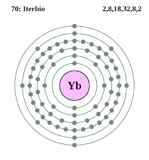
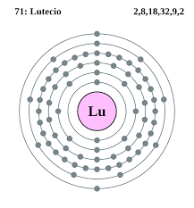

Los lantanoides o lantánidos son un grupo de elementos que forman parte del periodo 6 de la tabla periódica de los elementos. Estos elementos son llamados «tierras raras» debido a que se encuentran en forma de óxidos, y también, junto con los actínidos, forman los «elementos de transición interna».
El lantano es un elemento químico de la tabla periódica cuyo símbolo es La y su número atómico es 57. Es el primer elemento de la serie de los lantánidos.
Configuración electrónica: [Xe] 5d¹6s²
Electronegatividad: 1,1
Número atómico: 57
Masa atómica: 138,90547 u
Punto de fusión: 920 °C
Radio de Van der Waals: 250 pm
El cerio es un mineral y elemento químico de símbolo Ce y número atómico de 58. Es uno de los 14 elementos químicos que siguen al lantano en la tabla periódica, denominados por ello lantánidos. El cerio está situado entre el lantano y el praseodimio.
Configuración electrónica: [Xe] 4f¹5d¹6s²
Masa atómica: 140,116 u
Número atómico: 58
Descubrimiento: 1803
Electronegatividad: 1,12
Descubridores: Jöns Jacob Berzelius, Martin Heinrich Klaproth, Carl Gustaf Mosander
El praseodimio es un elemento químico con el símbolo Pr y el número atómico 59. Es el tercer miembro de la serie de lantánidos y se considera uno de los metales de tierras raras. Es un metal blando, plateado, maleable y dúctil, apreciado por sus propiedades magnéticas, eléctricas, químicas y ópticas.
Configuración electrónica: [Xe] 4f36s2
Número atómico: 59
Masa atómica: 140,90765 u
Punto de ebullición: 3.520 °C
Descubrimiento: 1885
Descubridor: Carl Auer von Welsbach
El neodimio es un elemento químico cuyo símbolo es Nd y su número atómico es 60. Es el cuarto miembro de la serie de los lantánidos y se considera uno de los metales de tierras raras. A la temperatura ambiente, se encuentra en estado sólido.
Configuración electrónica: [Xe] 4f⁴6s²
Número atómico: 60
Punto de fusión: 1.021 °C
Masa atómica: 144,242 u
Descubrimiento: 1885
Descubridor: Carl Auer von Welsbach
Elemento químico de la tabla periódica cuyo símbolo es Pm y su número atómico es 61, pertenece al grupo de los lantánidos. Es el segundo elemento obtenido artificialmente. Elemento metálico de la serio de los lantánidos o tierras raras; es radioactivo y degenera por emisión de partículas beta.
Configuración electrónica: [Xe] 4f56s2
Masa atómica: 145 u
Número atómico: 61
Radio de Van der Waals: 243 pm
Descubrimiento: 1945
Descubridores: Jacob A. Marinsky, Charles D. Coryell, Lawrence E. Glendenin
El samario es un elemento químico de símbolo Sm y número atómico 62. Presenta una estructura cristalina romboedral, una masa atómica de 150,35 y una densidad de 7,35 g/cm³.
Configuración electrónica: [Xe] 4f⁶6s²
Masa atómica: 150,36 u
Electronegatividad: 1,17
Número atómico: 62
Descubrimiento: 1879
Descubridor: Paul Émile Lecoq de Boisbaudran
El europio es un elemento químico de la tabla periódica cuyo símbolo es Eu y su número atómico es 63. Fue descubierto en 1890 por Paul Emile Lecoq de Boisbaudran y aislado por primera vez por Eugène Demarçay, quien le dio su actual nombre, en 1901. Debe su nombre al continente europeo.
Configuración electrónica: [Xe] 4f76s2
Número atómico: 63
Masa atómica: 151,964 u
Radio de Van der Waals: 240 pm
Descubrimiento: 1901
Descubridores: Eugène Demarçay, Paul Émile Lecoq de Boisbaudran
El gadolinio es un elemento químico de la tabla periódica cuyo símbolo es Gd y cuyo número atómico es 64. Es un metal raro de color blanco plateado, es maleable y dúctil. Solo se encuentra en la naturaleza de forma combinada.
Configuración electrónica: [Xe] 4f75d16s2
Masa atómica: 157,25 u
Electrones por nivel: 2,8,18,25,9,2
Número atómico: 64
Descubrimiento: 1880
Descubridores: Jean Charles Galissard de Marignac, Paul Émile Lecoq de Boisbaudran
El terbio es un elemento químico de la tabla periódica cuyo símbolo es Tb, sólido metálico de color blanco y brillo plateado. Su número atómico es 65, con una masa atómica de 158,9. Tiene una densidad de 8,3 g/cm³. Con un punto de fusión de 1.360 °C y un punto de ebullición de 3.041 °C.
Configuración electrónica: [Xe] 4f⁹6s²
Número atómico: 65
Masa atómica: 158,92535 u
Radio de Van der Waals: 237 pm
Descubrimiento: 1843
Descubridor: Carl Gustaf Mosander
El disprosio es un elemento químico cuyo símbolo es Dy y su número atómico es 66. Es un metal de transición de color blanco plata, incluido en el grupo de los lantánidos o tierras raras.
Configuración electrónica: [Xe] 4f106s2
Número atómico: 66
Masa atómica: 162,5 u
Electronegatividad: 1,22
Descubrimiento: 1886
Descubridor: Paul Émile Lecoq de Boisbaudran
El holmio es un elemento químico de la tabla periódica cuyo símbolo es Ho y su número atómico es 67. Es un metal relativamente blando, plateado, bastante resistente a la corrosión y maleable.
Configuración electrónica: [Xe] 4f116s2
Número atómico: 67
Masa atómica: 164,93032 u
Electrones por nivel: 2,8,18,29,8,2
Descubrimiento: 1878
Descubridores: Per Teodor Cleve, Jacques-Louis Soret, Marc Delafontaine
El erbio es un elemento químico de la tabla periódica cuyo símbolo es Er y su número atómico es 68. El erbio es un elemento un tanto raro de color plateado perteneciente a los lantánidos y que aparece asociado a otros lantánidos en el mineral gadolinita procedente de Ytterby.
Configuración electrónica: [Xe] 4f126s2
Número atómico: 68
Electrones por nivel: 2,8,18,30,8,2
Masa atómica: 167,259 u
Descubrimiento: 1843
Descubridor: Carl Gustaf Mosander
El tulio es un elemento químico de la tabla periódica cuyo símbolo es Tm y su número atómico es 69.
Configuración electrónica: [Xe] 4f136s2
Número atómico: 69
Masa atómica: 168,93421 u
Punto de fusión: 1.545 °C
Descubrimiento: 1879
Descubridor: Per Teodor Cleve

El iterbio es un elemento químico de la tabla periódica que tiene el símbolo Yb y el número atómico 70. El iterbio es un elemento metálico plateado blando, una tierra rara de la serie de los lantánidos que se halla en la gadolinita, la monazita y el xenotimo.
Configuración electrónica: [Xe] 4f146s2
Masa atómica: 173,04 u
Número atómico: 70
Electrones por nivel: 2,8,18,32,8,2
Descubrimiento: 1878
Descubridor: Jean Charles Galissard de Marignac
El lutecio es un elemento químico, de número atómico 71, cuyo símbolo químico es Lu. A pesar de ser uno de los elementos del bloque d, con frecuencia aparece incluido entre los lantánidos, ya que con estos comparte muchas propiedades.
Configuración electrónica: [Xe] 4f145d16s2
Número atómico: 71
Electronegatividad: 1,27
Masa atómica: 174,967 u
Descubrimiento: 1907
Descubridores: Georges Urbain, Charles James
